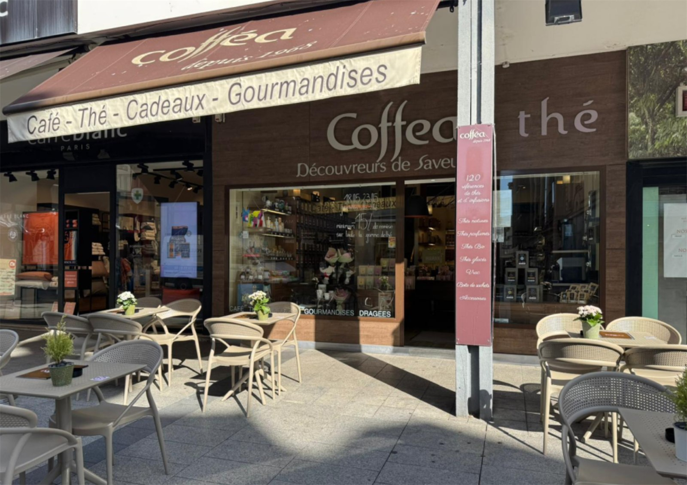
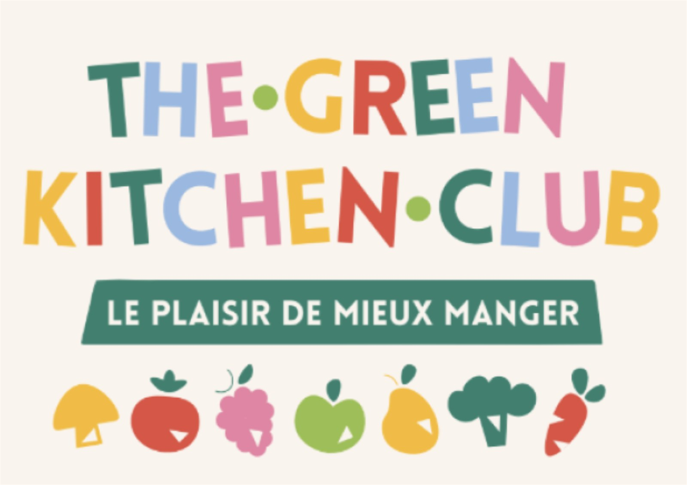
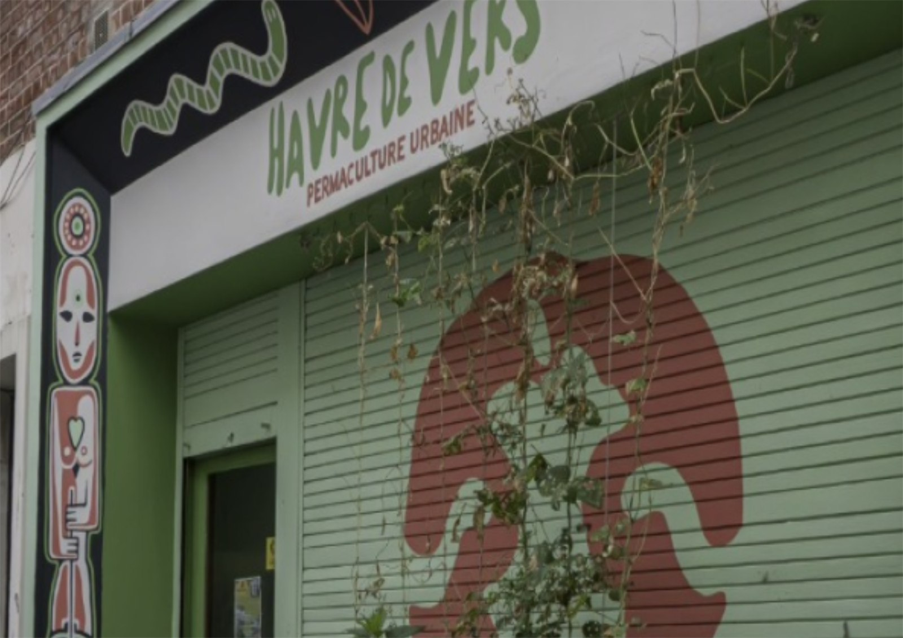
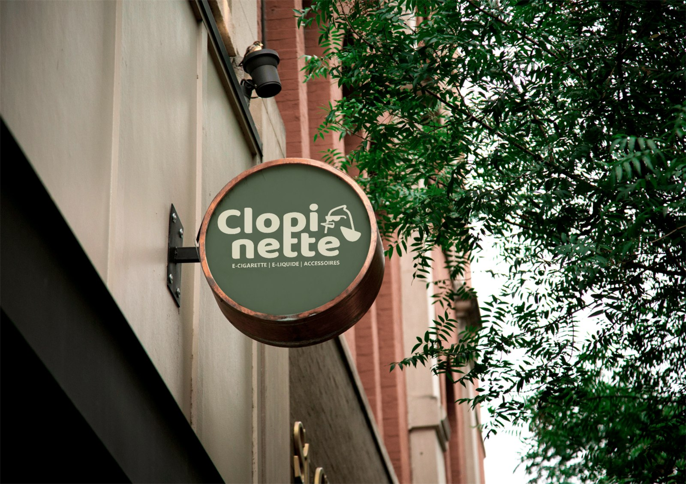

La spécialité de la maison
Cofféa - Mon alternance
Chargée de communication en autonomie pour une enseigne de café, thé et gourmandises. De la vidéo à la rédaction web, en passant par les réseaux et la photo.
Voir ce projetMes projets, servis en plusieurs spécialités
Ici, tout est fait maison. Retrouvez mes projets, organisés par domaine de compétence. De la conception à la réalisation.
Un projet vous intrigue ? Cliquez pour le détail.
Les incontournables

La spécialité de la maison
Chargée de communication en autonomie pour une enseigne de café, thé et gourmandises. De la vidéo à la rédaction web, en passant par les réseaux et la photo.
Voir ce projet

La suggestion du chef
Une plateforme pédagogique pour débutants, pensée de bout en bout : identité de marque, UX/UI, avatars illustrés et stratégie de contenu.
Voir ce projetAlternance
Chargée de communication en autonomie pour une enseigne de café, thé et gourmandises. De la vidéo à la rédaction web, en passant par les réseaux et la photo.
Voir ce projetPlateforme pédagogique
Une plateforme pédagogique pour débutants, pensée de bout en bout : identité de marque, UX/UI, avatars illustrés et stratégie de contenu.
Voir ce projet
Identité visuelle
Sept heures pour répondre à un appel d'offre : positionnement, identité de marque, enquête terrain et stratégie de lancement d'un salon.
Voir ce projet
Illustration et iconographie
L'affiche d'un festival de musique fictif, dont le visuel principal est généré par intelligence artificielle puis composé et texturé sur Illustrator.
Voir ce projet
Vidéo et motion
Un spot vidéo sans voix off, où les gestes des commerçants racontent le passage du quotidien à la soirée de dégustations.
Voir ce projet
Vidéo et motion
Une application fictive pour emprunter à ses voisins ce qu'on n'utilise qu'une fois, racontée en motion design.
Voir ce projet
Identité visuelle
Une série de pictogrammes de fruits et légumes, prolongée par un logo et une ébauche de système d'avatar.
Voir ce projet
Identité visuelle
Le rebranding d'un café à chats : un logo passé de l'illustratif au symbolique, sa décomposition, sa palette et ses pictogrammes.
Voir ce projet
Réseaux sociaux
Six publications Instagram créées bénévolement pour une association havraise de permaculture urbaine, dans une ambiance scrapbooking.
Voir ce projet
Identité visuelle
Une identité visuelle tournée vers le naturel : trois versions du logo, une palette végétale et une maquette web, du wireframe à l'interface.
Voir ce projetRien à cette carte pour le moment. Choisissez une autre spécialité.